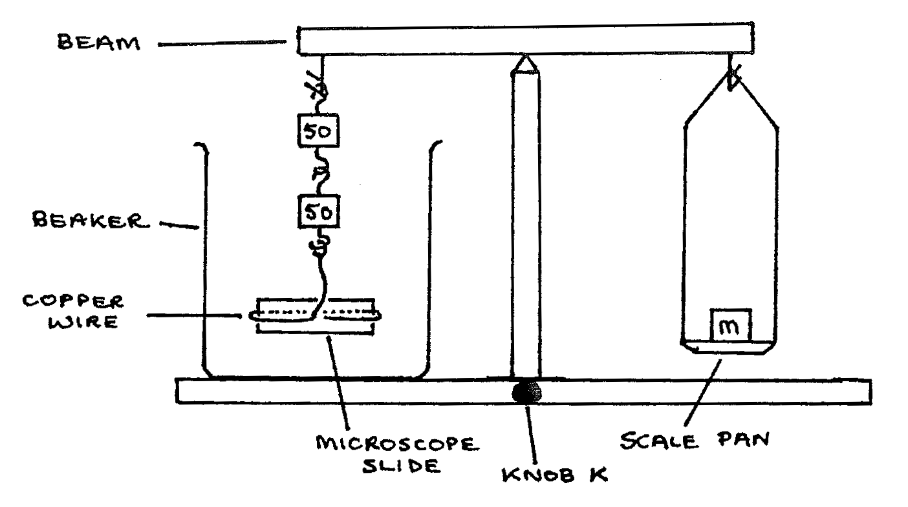
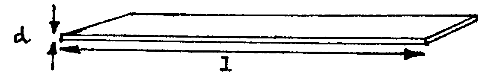

C1-1: Finding the Surface Tension of Water¶
Apparatus¶
Beam balance with two boxes of masses; tweezers; 2 X \(50\text{g}\) masses with hooks; microscope slide with copper wire to support it; wide \(1\text{L}\) beaker; \(1\text{L}\) beaker of clean water; Vernier calipers; magnifying glass; thermometer (\(0-100\text{°C}\))

For cleaning slide: teat pipette; small beaker; dilute alkali; dilute acid; distilled water.
Procedure¶
- Attach the copper wire to the slide as shown. Clean the lower half of the slide by running liquid from the pipette over it into an empty beaker: first alkali, then acid, then distilled water.
- Assemble the apparatus as above using the empty, clean \(1\text{L}\) beaker.
- Raise the beam, using knob K, and carefully add masses m using the tweezers, until it is perfectly balanced. Note the total mass \(m_1\).
- From now on, leave the beam raised, do not lower it. Carefully pour water into the beaker until the water surface touches the whole bottom edge of the slide.
- Add more masses to m, little by little, until the slide just breaks away from the surface. Note the total mass in the scale pan now \(m_2\).
- Reduce m until the slide touches the surface again. then repeat section 5. Repeat again to get three readings of \(m_2\) . Note the readings and average them.
- Use the Vernier calipers to measure the length (\(l\)) and thickness (\(d\)) of the slide. Measure the temperature of the water. Record these readings.

Observations¶
Slide
Water
Theory¶
The surface tension pulling force of the water exerted on the slide is proportional to the length of the line of contact between the water and the slide. Therefore:
\(\text{Surface tension force}=\gamma \times \text{perimeter of the slide}\)
In the experiment, the surface tension force is in equilibruim with the mass added to the beam balance, hence:
This is true at the point just before the slide leaves the water.
where \(g=9.8\text{NKg}^{-1}\)
Thus:
\(\gamma\) (Greek: gamma) is a constant called the surface tension of water.
Analysis¶
- Use your readings to find the surface tension of water \(\gamma\), stating the temperature at which it was measured.
- Use a method of dimensions to find the unit of \(\gamma\).
- Draw a diagram to show the molecular forces acting on:
- the slide
- the water
- What effect on \(\gamma\) would the following have?
- Raising the water temperature
- Mixing impurities into the water
- If the slide is greasy, how will this affect:
- The angle of contact of the water?
- The downward force on the slide?
- Use your value of \(\gamma\) to calculate the capillary rise up a glass tube of internal diameter \(0.2\text{mm}\), if the angle of contact of the water on the glass is assumed to be \(0\text{°}\).